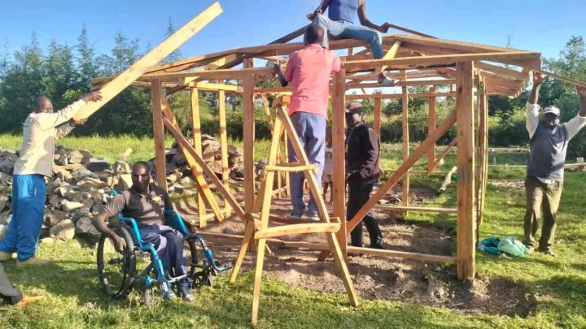
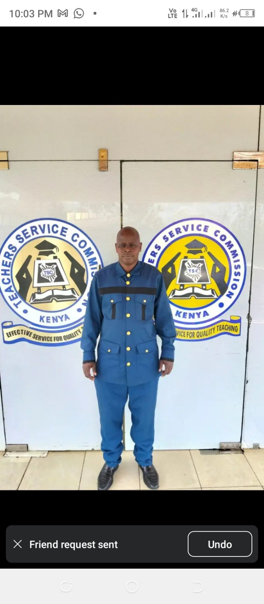

Practical help where it matters most
Programme areas, one intervention at a time.
Individual, dated project case studies (location, beneficiaries, evidence) are being catalogued and will be published here as documentation is confirmed. The five programme areas below are already part of Daniel's documented record.
01 · Mobility & assistive devices
Wheelchairs, canes and limbs that restore independence.
Facilitating access to wheelchairs, white canes, artificial limbs and other mobility support for people who would otherwise go without. This is the programme area Daniel's work began with, and it remains the most consistently documented.
Featured example: a pupil at Kaling Primary School who had previously been carried roughly three kilometres to school was provided with a wheelchair, changing daily attendance from dependent on another child's back to independent.


02 · Inclusive education
Removing the barriers between a child and a classroom.
Helping children with disabilities overcome physical, financial and social barriers to school access and participation — from mobility support to advocacy with school administrations and local authorities.
This work connects directly to Daniel's own career: he helped establish Kamorir Primary School and served as its acting head teacher, giving him a practical, inside view of what inclusion requires at school level.
03 · School water & sanitation
Infrastructure that keeps children in school.
Supporting water tanks, rainwater harvesting and sanitation initiatives in schools, addressing one of the more overlooked reasons children — particularly girls — miss school or drop out.
04 · Eye health
A referral network for people who can't see well.
Connecting people requiring eye care with organisations and facilities able to provide assistance, using the same network of well-wishers and partners that supports the mobility work.
05 · Community support
Mobilising help for people facing difficult circumstances.
Beyond the four named pillars, Daniel and his network respond to individual cases of hardship as they arise — mobilising resources, connecting people to organisations, and providing direct practical assistance. This is also the seed of a longer-term goal: moving communities from dependency toward opportunity.
Next
Where the evidence for these projects will live.
As certificates, letters, photographs and reports are supplied, each project above will link out to its own record in the Evidence Library, and to the Daniel Mutai Foundation where a project has been formalised under the Foundation.